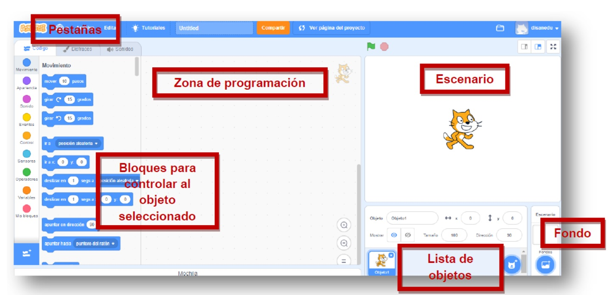

PANTALLA Principal
El Escenario es el lugar donde veremos cómo nuestras creaciones: historias, juegos y
animaciones cobran vida.
La lista de objetos muestra imágenes en miniatura de los objetos que contiene nuestro
proyecto. Los proyectos de Scratch están construidos a base de objetos y pueden ser
cualquier cosa: persona, animal, vehículo, texto...
La zona de programación es el lugar al que arrastraremos los bloques con el fin de dar
las instrucciones al elemento seleccionado en la lista de objetos.
La pestaña Código contiene los bloques que arrastraremos a la zona de programación y
le dirán al objeto las tareas que tiene que realizar. Los bloques están clasificados por
categorías y cada una se identifica con un color: azul para movimiento, verde para los
operadores...
En la pestaña Disfraces podemos ver las imágenes que incluye el objeto, por lo general
se usan para darle movimiento como si fuera un .gif animado.
Desde la pestaña Sonidos podremos asignárselos al objeto seleccionado. Scratch
incluye una biblioteca de sonidos, aunque también podremos grabar otros o utilizar los
que ya tengamos en formato .wav o .mp3


 podemos darles ordenes a la plataforma en este caso utilizamos
podemos darles ordenes a la plataforma en este caso utilizamos